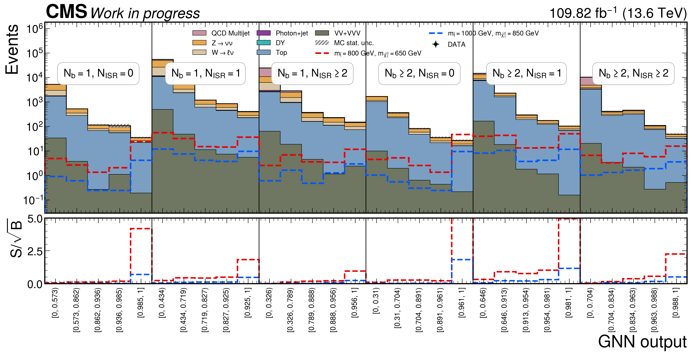
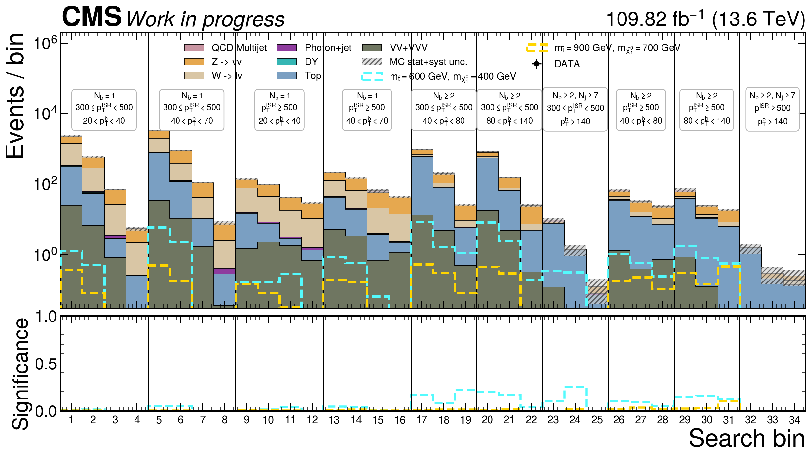

30SR bins (6×5)
5inclusive GNN bins per CR
8,3902025 intermediate ROOTs
1,3472025 signal mass points
2024 · 109.82 fb−1
Reference evaluation used to freeze the SR and CR score boundaries.

Signal region30 bins · blinded Asimov background

Legacy 2024 Low-Δm SR categories34-bin reference · pre-GNN categorization

Lost-lepton control regionInclusive · 5 GNN bins

QCD control regionInclusive · 5 GNN bins

Photon control region · unit areaInclusive · 5 GNN bins

Dilepton control region · RZ appliedInclusive · 5 GNN bins
2025 · 110.84 fb−1
The same model, selection contract, categories, and bin edges are applied without retraining.
Preliminary calibration status. The published Prompt-2025 EGM payload does not yet provide the electron-HLT and photon-CSEV working-point scale factors, so their central factors are explicitly recorded as unity. The 2025 b-tag, trigger, lepton/photon ID, pileup, and low-pT analysis scale factors are applied. One upstream JetMET source file remains permanently skipped, so complete 2025 luminosity coverage is not claimed.


Low-Δm physical distributions
Current broad Low-Δm selection: 90 CR and 15 SR distributions per year. Use the year, region type, and variable controls on the distribution page.